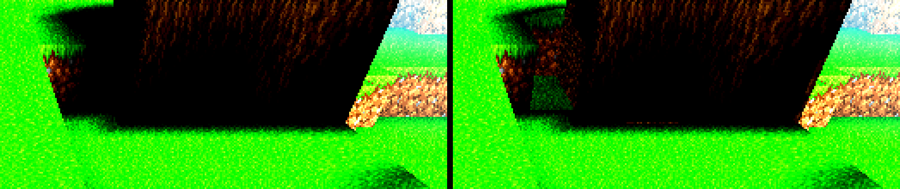
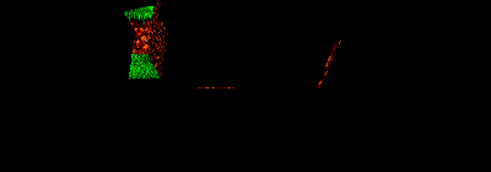
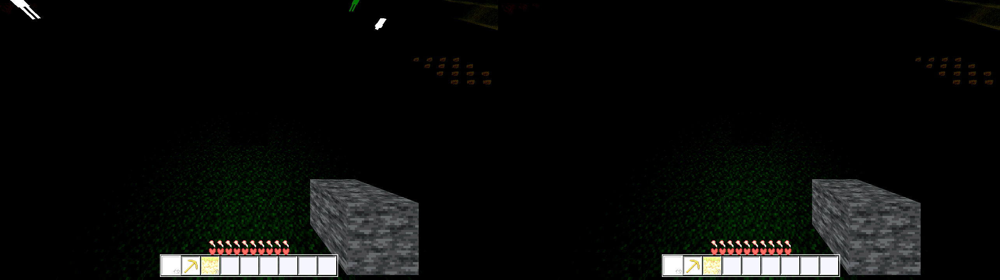

Verdict: the first (cheap) hypothesis is partially right.
The black region contains two causes, and the run says so because both contribute.
Enabling the existing ambient_sky switch lifts the floor-lit faces (Cause A)
but cannot remove the dominant pure-black (Cause B), which is a
merged-canvas/material bug. No default was flipped, so no look was shipped; the real fix is
Cause B and needs the mesh/canvas code (partly fenced).
Seed 44, default user camera (aim cell (8,140,8); cam (8.5,143.5,10.5); yaw 0; pitch −0.98279), r4, Forward+ 1280×720. The black quadrilateral (frame x 694–886, y 0–72) is terrain in front of the camera at world (x 9–16, z −8…−1): grass tops (block 1, top y=140), a tree (logs block 6 at y140–142, leaves block 7 at y143–144, x 12–15, z −8…−5), and the step faces between them.
A ray-march from 221 pixels of the black region hit a solid block in 221/221 cases (zero miss): it is not a void or a missing face — every pixel lands on real geometry. Hit faces: 66% top faces, 29% south faces, 5% west faces.
The step/top faces beside the tree are occluded by the tree's tall columns (occl ≥ ~2.3)
and sit at the light floor: measured vColor r=20/255 (=0.078) on the grass tops at
(x 11–15, world z −8…−5, y140) and on the x=16 seam face (t=8…13).
These render dark brown (e.g. (22,7,0)), not pure black. The AC-0426 ambient term
(mask step(m_direct,0.08), which fires at m_direct=0.078) lifts them.
The remaining pure-black pixels (64% of the region even with the switch ON) map, by
ray-march, to fully-lit grass-top faces (vColor r=153–255) at world
z −4…−1 and to tree side faces. A fully-lit face has
L=0.20+0.8×1.0=1.0 and b(oshade) ~0.6–1.0, so ALBEDO = tex*b*L can be
(0,0,0) only if the sampled texel is (0,0,0). Those faces sample the grass-top
tile (canvas (1,1)–(32,32)) — the same tile the green neighbours use — so the
blackness is in the merged-canvas/material path, not the vColor. This is the ticket candidate
"the face being emitted by a different path" (the AC-0430 merged-canvas material path).
Why ambient_sky cannot fix Cause B: the mask requires m_direct ≤ 0.08, but these faces have m_direct up to 1.0, so the added term is 0 for them (consistent: they stay (0,0,0) with the switch ON).


| Region (1280×720 frame) | mean lum OFF | mean lum ON | pure-black OFF | pure-black ON |
|---|---|---|---|---|
| Black region x694–886, y0–72 | 6.51 | 7.18 | 73.5% | 64.4% |
| left cliff x694–760 (floor face, Cause A) | 4.08 | 5.90 | 76.5% | 52.3% |
| right x820–886 (Cause B core) | 13.94 | 14.03 | 62.0% | 60.2% |
| Neighbour, lit x890–960, y40–110 | 71.67 | 71.67 | 0 | 0 |
| Wider ground band y400–660 | 88.68 | 88.68 | 0 | 0 |
No-flattening check: PASS — the lit neighbour (71.67) and the wider ground band (88.68) are unchanged (0 pure-black) with the switch ON; the frame-wide delta is ~430 px (2×2 sampled), all in the black region. Nothing that is lit got washed out.

Night check ("nothing that should be dark at night became bright"):
PASS — at t=0.0 the ambient term is u_amb*u_day*… with
u_day=0, so it is 0; the terrain is stable and the only differences are in the sky, which got
darker, not brighter.
ambient_sky — but it is only part
of the region, and the lifted faces are still far darker than the neighbours.ambient_sky cannot touch it (its mask never fires there).ambient_sky default was left OFF (no look shipped), because
flipping it alone would ship an incomplete fix.godot/world/chunk.gd (GDScript, not fenced), but the UV generation and high/low
emit paths are in gdext/src/mesh.cpp (C++, fenced). AC-0430 fixed
one mis-sampling (tier-1 ring) and declared the rest sub-visible at that camera; this run shows a
fully-lit near tier-0 face sampling black, so that fix did not cover this path. A follow-up ticket
should root-cause Cause B; if the fix lands in mesh.cpp the work must stop and report (fenced).captures/before-off-day.png — switch OFF (byte-identical to the AC-0430 flagged frame)captures/after-on-day.png — switch ONcaptures/day-sidebyside-x3boost.png, captures/day-diff-x8.pngcaptures/night-off.png, captures/night-on.png,
captures/night-sidebyside-x3boost.png